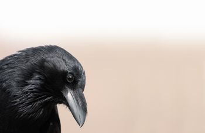
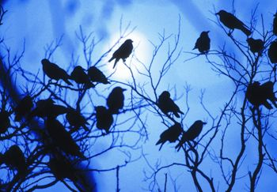
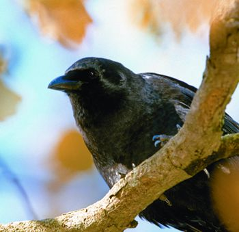
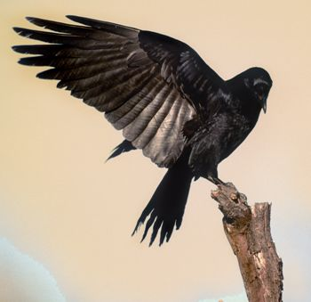
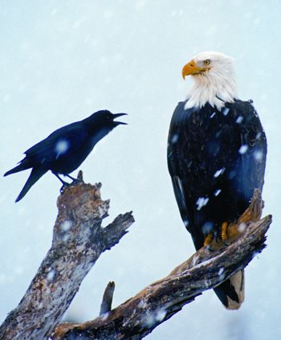
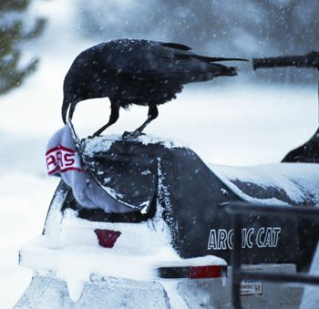
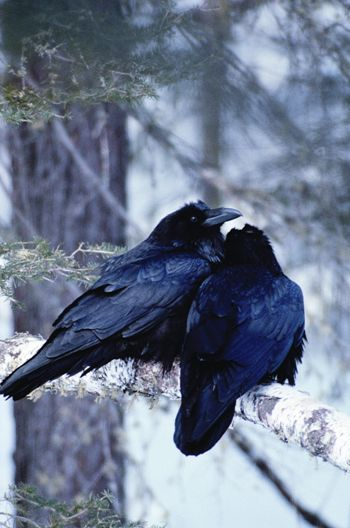

Let me introduce you to the Corvid family. Like all families, they have their faults. But I think you’ll like them anyway, once you get to know them. They’re sociable - if a bit loud, especially at gatherings. They’re smart and perceptive - though some might say cunning and deceptive. And they’re exceedingly resourceful - come to think of it, you might keep a close eye on your possessions. They’ve been known to steal - food, trinkets, baby animals.
Don’t worry. I’m speaking not of any human family, but of the bird family Corvidae, and particularly the crows and ravens in the clan Corvus. Like most members of that genus - which in North America also includes magpies, nutcrackers and jays - crows and ravens are sturdy, stout-beaked, long-legged birds with powerful wings. They also have something of an attitude, which can vary from aloof to in-your-face.
You can forgive them for their superior airs, though, when you consider their résumés. Crows and ravens are the stuff of legend; for centuries, they have been revered and reviled, fawned over and feared by humans. Shakespeare wrote them into his plays, Thoreau into his musings, Poe into his horror tales. Shrines have been built to them; songs sung; chants chanted. Oh - and one more thing: Crows and ravens are the eggheads of the bird world and thus the darlings of avian science. With the arguable exception of parrots, they’re the smartest winged species on the planet. They’ve even outperformed monkeys in some psychological tests. Truth be told, they’ve outsmarted many a human, too.
Some 40-plus species of crows and ravens inhabit the skies worldwide over virtually every terrain, from desert to tropics to tundra. In the contiguous United States, the American crow (Corvus brachyrhynchos) is easily the most common. Three other crows claim American territory: The slightly smaller fish crow (C. ossifragus) ranges along the East Coast and through the Gulf states east of Texas; the Northwestern crow (C. caurinus) occupies the Pacific seacoast from upper British Columbia to the northwestern tip of Washington; and the Mexican or Tamaulipas crow (C. imparatus) calls southernmost Texas its northern home.
Geographically, the crow’s larger cousin, the common raven (C. corax), is more broadly distributed. Its overall range encompasses almost all of Canada and Alaska; most of the western United States; and New England and the Appalachian mountains. In reality, though, the common raven is less common across its range as a whole, except in higher elevations. Like hawks and eagles, ravens prefer high places from which to search for food.
Some crows in the southern hemisphere have white or gray markings, but all crows and ravens north of Mexico wear basic black. The plumage provides a passive solar overcoat, which absorbs the sun’s heat and helps the birds regulate their body temperature. Black also functions as surprisingly effective camouflage, not just at night for roosting birds, but also on sunny days when the dappled light amid leafy trees provides cover for shadowy crows on the move. Scientists say, too, that the birds’ iridescent ebony plumage helps them spot members of their own species from a distance, an important ability among social birds given to gathering in groups but not inclined to encountering enemy raptors.
Although crows and ravens apparently have no trouble telling one another apart, humans have a harder time discerning the distinctions. Size would seem to matter, since an average raven is far larger (2 to 4 pounds, with a wingspan up to 4 feet) than a correspondingly average crow (1 to 1½ pounds, with a wingspan up to 3 feet). But if you judge strictly by size, you can easily mistake a small raven for a large crow or vice versa.
Fortunately, there are more reliable criteria. If you get a close look, the presence or absence of the raven’s massive bill and distinctly shaggy throat and leg feathers can provide conclusive evidence. When gazing up at a flying is-it-a-crow-or-a-raven, check out the bird’s tail. A crow’s is squared off at the end, while a raven’s is distinctly wedge-shaped. Also, remember that ravens routinely soar like hawks, their widespread wings buoyed by airy thermals, while a crow seldom glides more than a few seconds.
Finally, listen to the bird’s calls. The crow’s trademark caw caw doesn’t remotely resemble the raven’s characteristic utterance, a deep guttural crrroak or raaaaahk.
That crows and ravens are classified as songbirds may come as a surprise, but it is the presence of a voice box, or syrinx, rather than talent for melody that qualifies them. They use their vocal equipment to communicate with a large vocabulary of expressive calls for courting, gathering, warning and more. Ornithologists have identified as many as 24 crow calls and up to 64 distinct raven vocalizations. Among crows, most of the sounds are variations in pitch, intonation and repetitions of caw - from the loud caws! for alarm that are familiar to hikers, to a soft, affectionate caaaaaw for kin. Raven language, on the other hand, reaches well beyond the birds’ typical calls to include a repertoire of gurgles, rattles and bell-like notes - as well as a woodpeckerish knocking sound, “as of someone gently rapping, rapping.”
Of course, the raven rapping at Poe’s chamber door also displayed another corvid vocal skill, that of mimicry (or, in Edgar Allan’s words, quothing: “Nevermore!”). Crows and ravens can indeed mimic human speech, as well as a host of other sounds. Ravens, especially, are masterful imitators of their aural surroundings; sources cite realistic raven renditions of bubbling brooks, creaking branches, barking dogs, revving engines and dynamite explosions.
But it’s brainpower, not bravado vocals, that really sets crows and ravens apart from other animals. They have the largest cerebral hemispheres, relative to body size, of any birds - the raven’s brain is the same size in relation to its body as a chimpanzee’s. More significantly, crows and ravens apply their brainpower; they learn quickly, solve problems and store knowledge in long-term memories.
Furthermore, crows and ravens understand cause and effect. In the South Pacific, New Caledonian crows sculpt twigs into hooked probes that they use to pry out otherwise inaccessible grubs - they make their own “crowbars.” The same crows nip the edges of rigid leaves to create sawlike teeth, then shove the barbed tools beneath leaf litter to spear prey. They also carry their tools with them on foraging expeditions, and store them for later use.
Stories abound of crows or ravens dropping nuts or clam shells onto highways and other hard surfaces to break them open. In Japan, crows are reported to have taken the strategy a step further by placing nuts in front of the tires of cars stopped at red lights. Some claim to have seen ravens chasing squirrels and rabbits into the paths of oncoming cars, creating premeditated roadkill. Biologists say that ravens follow the tracks and howls of wolf packs, as well as the sounds of hunters’ gunshots, to locate the spoils of their kills.
Scientific research confirms much of the anecdotal evidence. In one study of captive birds, scientist Bernd Heinrich dangled a bit of meat from the end of a 2-foot-long string tied to a perch. He then watched his test subjects - first a pair of American crows, and later five common ravens - attempt to bring home the bacon (in this case, it was actually salami). The crows tried flying at the food, then tugged at the string a few times, but gave up within 15 minutes. Time to study the situation didn’t help; after 30 days, they still hadn’t solved the problem. The ravens spent a few hours glancing at the puzzle, as if weighing the possibilities. Then one bird flew to the perch, hoisted a length of string up with its beak, stepped on the loop, pulled up another length, stepped on that loop, and so on until it had reeled in the food. Ultimately, three more ravens also solved the problem. Two improved on the technique by simply grabbing the string and side-stepping along the perch.
None of this would surprise ice fishermen in Finland, where hooded crows use the same pull-step-pull-step method to haul in fish on abandoned baited lines.
Perhaps you’ve noticed that food is the object of all this corvid cleverness. Crows and ravens are true omnivores, spending most of their daylight hours feeding. Grains, nuts, berries, worms, crayfish, snakes, frogs, insects, eggs, chicks, infant mammals and more are on their menu of natural foods. Supplementing if not supplanting that diet are “anthropogenic” foods, aka our diet: spaghetti, French fries, watermelon, cheeseburgers, corn-on-the-cob, baloney sandwiches, you name it - stolen from beneath our noses in campgrounds or scavenged from trash bags, landfills and fast-food parking lots.
Then too, there is the birds’ infamous taste for carrion. Neither crows nor ravens have beaks designed to tear into hide and cartilage-encased muscle, so they must wait for toothy predators, decomposing bacteria or the squashing force of automobile tires to premasticate their fleshy meals for them. Scavenging crows and ravens were once welcomed in ancient Europe as street cleaners - until their habit of following troops into battle and feeding on the corpses left in the aftermath earned them an enduring reputation as harbingers of death. So it is that a group of crows is called a “murder,” and a gathering of ravens an “unkindness.”
The opposite side of the birds’ behavioral spectrum is their devotion to family. Ravens and crows mate for life and raise their families cooperatively. During each breeding season, the male and female work together to weave a large basketlike nest of sticks, bark and vines on a limb high above the ground. While her partner shuttles food to her, the female incubates a clutch of three to six splotchy greenish blue eggs until they hatch 18 to 20 days later. The parents dote on their babies, guarding them and keeping their bellies filled with regurgitated food, until the young are ready to leave the nest - after about three to five weeks for young crows, four to six weeks for ravens. Even then, the parents continue to supply the fledglings with nourishment until they gradually become independent.
Raven young strike out on their own after about two months. Crow offspring, however, stick around for several years, helping their parents build nests and raise younger siblings in subsequent seasons. An extended crow family may include a dozen or more adults, with some working to feed nestlings or fledglings and some standing guard while others forage.
Even nonrelated crows or ravens pull together to their mutual benefit. Pity the poor owl or hawk whose presence is announced by an alarm-sounding corvid - neighborhood crows or ravens will rush to harass the bird until it leaves. At night, especially in fall and winter, crows congregate in communal roosts, both for the strength of numbers and to exchange information; in the morning, hungry crows follow well-fed crows to feeding areas. The roosts can range from less than a hundred crows to thousands - and in some cases, more than a million.
Although hanging out together in trees serves crows and ravens well, it makes them unpopular among humans with homes and farms below. After all, admiration doesn’t come easily when the birds are gobbling your seedlings and sliming your deck with waste. Large numbers of crows and ravens can decimate crops and threaten livestock. Until the latter third of the 20th century, farmers and ranchers poisoned, trapped and shot the “pests” by the thousands, nearly wiping out raven populations in the East. Today, crows and ravens are protected by federal and state hunting regulations and by a wider awareness of the birds’ benefits as major controllers of agricultural pest insects. Crows remain plentiful, and ravens are making a comeback. Both species are extending their ranges into food-rich urban areas.
Crows and ravens are neighbors worth watching, carefully - not for the faults we perceive in them, but for their extraordinary lives as intelligent, complex social creatures. So don’t overlook them the next time you’re outdoors. Grace and beauty ride on the wings of a raven soaring in the sky. And that familiar crow’s caw? There’s poetic sustenance in it, too, as Thoreau observed when he wrote in his journal in the winter of 1855:
“I hear faintly the cawing of a crow far, far away, echoing from some unseen wood-side ... It mingles with the slight murmur of the village, the sound of children at play, as one stream empties gently into another, and the wild and tame are one. What a delicious sound! It is not merely crow calling to crow, for it speaks to me too. I am part of one great creature with him.”
|
 TOMVEZO.COM Ravens and crows have the largest brains, relative to body size, of any birds - the raven (shown here) has the same brain/body size ratio as the chimpanzee. |
 MASLOWSKI PRODUCTIONS A “murder” in the light of a full moon: Though it’s not a commonly used term today, a group of crows is called a murder; the name came from their medieval reputation as harbingers of death. |
 MASLOWSKI PRODUCTIONS American crow
|
|
 TOMVEZO.COM Common raven |
 TOM & PAT LEESON Crows and ravens can be both sneaky and bold. Here, a crow takes an attitude with a bald eagle. |
 MICHAEL QUINTON/MINDEN PICTURES This raven pickpocket used its beak to open the snowmobile’s storage compartment and steal a ski cap.
|
|
 JIM BRANDENBURG/MINDEN PICTURES "One of the most difficult of all things to endure for a crow, a raven, a wolf or a human is to feel alone and separated from one’s own kind. A sense of belonging is one of the most universal of all feelings." - Lawrence Kilham
|
|
|